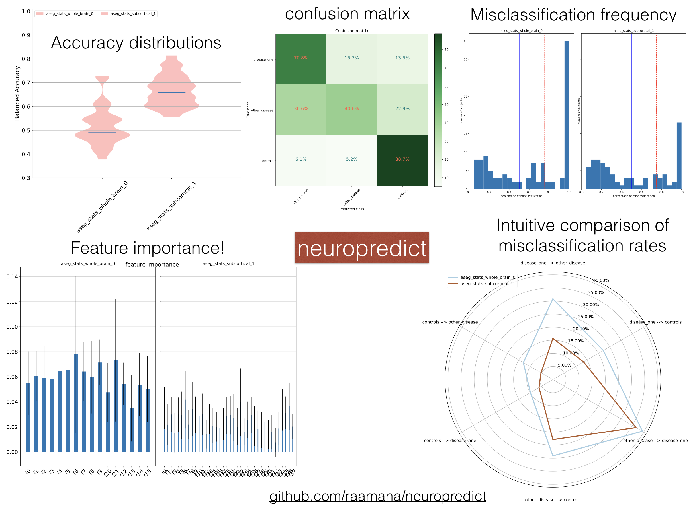

Report¶
Neuropredict is here to remove those barriers and make your life easier!
All you need to do is take care of preprocessing and produce quality controlled output through popular software, and neuropredict will produce a comprehensive report (see figures below) of distribtions of cross-validated performance, confusion matrices, analysis into misclassification and an intuitive comparison across multiple features.
Results Interpretation¶
TODO describe each output produced in detail